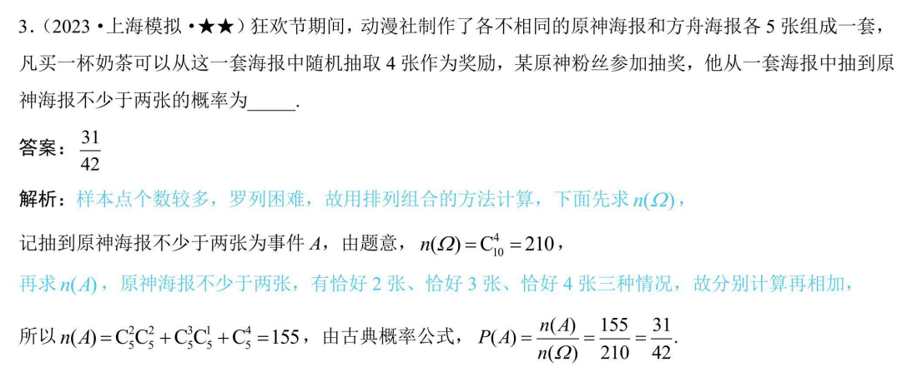
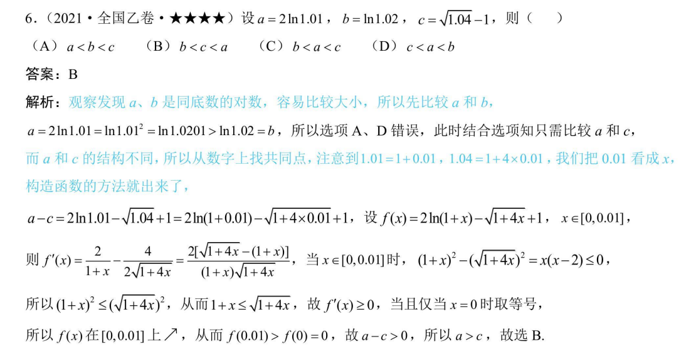

为了宣扬严嘉轩同学“怎么证”“不存在”等优秀事迹，特创建网站纪念。网址zenmezheng.github.io
首先欣赏一道很原的题目()
1.P23 T6 “构建9个函数”
2.P39 T3 “[1/2,5/2)”
3.P40 T4(2) “2Bmax不存在”
4.P42 T7(1) “∠B=60°，证明 A + C = 2B 怎么证？不会证”
5.P43 T8 “sin ( 兀 - A ) = - sin A；5c × c = c^2”
P50 T6 “投影法绝对可以做出来！”